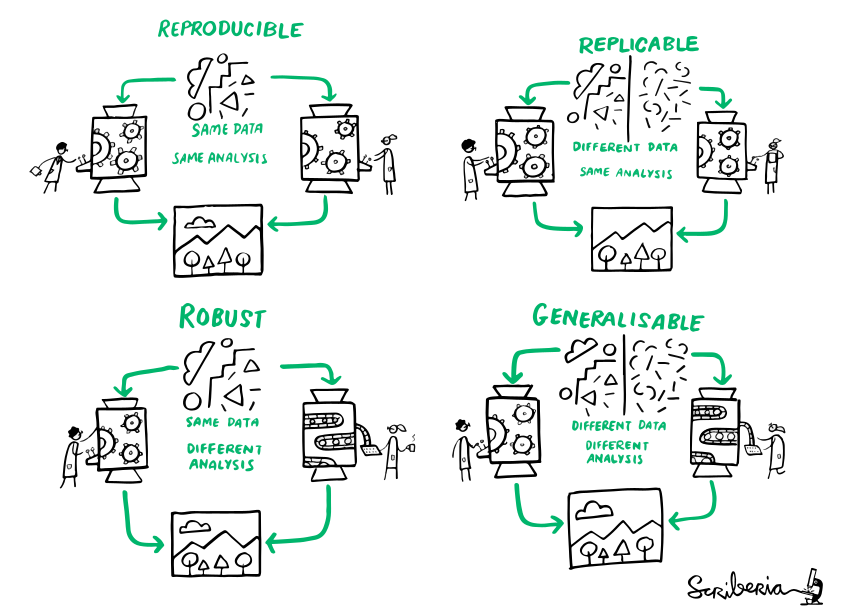
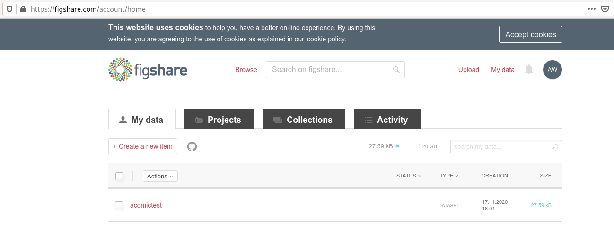

Reproducible Research

An article about computational science in a scientific publication is not the scholarship itself, it is merely advertising of the scholarship. The actual scholarship is the complete software development environment and the complete set of instructions which generated the figures.
Jon Claerbout (paraphrased)
Reminder: definitions
(The Turing Way)
General reproducibility checklist (Hinsen, 2020)
- Use code/scripts
- Document
- Record
- Test
-
Workflows based on point-and-click interfaces (e.g. Excel), are
not reproducible. Enshrine computations and data manipulation in code.
-
Use comments, computational notebooks and README files to explain
how your code works, and to define the expected parameters and the
computational environment required.
-
Make a note of key parameters, e.g. ‘seed’ values used to start a
random-number generator.
-
Create a suite of test functions. Use positive and negative control
data sets to ensure you get the expected results, and run those tests
throughout development to squash bugs as they arise.
General reproducibility checklist (Hinsen, 2020)
- Guide
- Archive
- Track
- Package
-
Create a master script (for example, a ‘run.sh’ file) that downloads
required data sets and variables, executes your workflow and provides
an obvious entry point to the code.
-
GitHub is a popular but impermanent online repository. Archiving
services such as Zenodo, Figshare and Software Heritage promise
long-term stability.
-
Use version-control tools such as Git to record your project’s history.
Note which version you used to create each result.
-
Create ready-to-use computational environments using containerization
tools (for example, Docker, Singularity), web services (Code Ocean,
Gigantum, Binder) or virtual-environment managers (Conda).
General reproducibility checklist (Hinsen, 2020)
- Automate
- Simplify
- Verify
-
Use continuous-integration services (for example, Travis CI) to
automatically test your code over time, and in various computational environments
-
Avoid niche or hard-to-install third-party code libraries that can complicate reuse.
-
Check your code’s portability by running it in a range of computing environments.
Reproducible Research
- DataLad is one tool that can make reproducible research easier
- Let's take a more detailed look into some ways in which DataLad can help:
- Some miscellaneous facts about DataLad functions
- Details of the YODA principles for reproducible analyses
- DataLad as a component in reproducible papers
- The
datalad-containerextension to add and use software containers
Did you know...
- Use code/scripts
- First: YES! Very much so!
- But if your workflow includes interactive
code sessions, and you want to at least save the results, you could do
datalad run ipython/R/matlab/... - Once you close the interactive session, every result you created would be saved (although with crappy provenance)
-
Workflows based on point-and-click interfaces (e.g. Excel), are
not reproducible. Enshrine computations and data manipulation in code.
Did you know...
- Document
- Record
- Commit messages and run records can do this for you, and are a useful basis to extend upon with "documentation for humans" such as READMEs
- The YODA procedure automatically populated your repository with README files to nudge you into using them.
-
Use comments, computational notebooks and README files to explain
how your code works, and to define the expected parameters and the
computational environment required.
-
Make a note of key parameters, e.g. ‘seed’ values used to start a
random-number generator.
Did you know...
- Test
- First: YES! Very much so! And there is an excellent Turing Way chapter about it
- Because annexed files are stored by their content identity hash, if any change in your pipeline/workflow produces a changed results, the version control software will be able to tell you
-
Create a suite of test functions. Use positive and negative control
data sets to ensure you get the expected results, and run those tests
throughout development to squash bugs as they arise.
Did you know...
- Guide
- First: YES! Very much so!
- A well-made run record can do this, or at least help
- Makefiles (shown later in this section) are also great
-
Create a master script (for example, a ‘run.sh’ file) that downloads
required data sets and variables, executes your workflow and provides
an obvious entry point to the code.
Did you know...
- Archive
-
Archiving services such as Zenodo, Figshare and Software Heritage promise
long-term stability.
You can archive a dataset to figshare?
If you have a Figshare account, you can do the following:
$ datalad export-to-figshare
[INFO ] Exporting current tree as an archive under /tmp/comics since figshare does not support directories
[INFO ] Uploading /tmp/comics/datalad_ce82ff1f-e2b3-4a84-9e56-87d8eb6e5b27.zip to figshare
Article
Would you like to create a new article to upload to? If not - we will list existing articles (choices: yes, no): yes
New article
Please enter the title (must be at least 3 characters long). [comics#ce82ff1f-e2b3-4a84-9e56-87d8eb6e5b27]: acomictest
[INFO ] Created a new (private) article 13247186 at https://figshare.com/account/articles/13247186. Please visit it, enter additional meta-data and make public
[INFO ] 'Registering' /tmp/comics/datalad_ce82ff1f-e2b3-4a84-9e56-87d8eb6e5b27.zip within annex
[INFO ] Adding URL https://ndownloader.figshare.com/files/25509824 for it
[INFO ] Registering links back for the content of the archive
[INFO ] Adding content of the archive /tmp/comics/datalad_ce82ff1f-e2b3-4a84-9e56-87d8eb6e5b27.zip into annex AnnexRepo(/tmp/comics)
[INFO ] Initiating special remote datalad-archives
[INFO ] Finished adding /tmp/comics/datalad_ce82ff1f-e2b3-4a84-9e56-87d8eb6e5b27.zip: Files processed: 4, removed: 4, +git: 2, +annex: 2
[INFO ] Removing generated and now registered in annex archive
export_to_figshare(ok): Dataset(/tmp/comics) [Published archive https://ndownloader.figshare.com/files/25509824]
Did you know ...
Did you know...
- Package
-
The
datalad-containerextension can help to share software environments in your dataset (more later in this section)
-
Create ready-to-use computational environments using containerization
tools (for example, Docker, Singularity), web services (Code Ocean,
Gigantum, Binder) or virtual-environment managers (Conda).
DataLad Datasets for data analysis
- A DataLad dataset can have any structure, and use as many or few features of a dataset as required.
- However, for data analyses it is beneficial to make use of DataLad features and structure datasets according to the YODA principles:

- P1: One thing, one dataset
- P2: Record where you got it from, and where it is now
- P3: Record what you did to it, and with what
Why?
Original
/dataset
├── sample1
│ └── a001.dat
├── sample2
│ └── a001.dat
...
After applied transform (preprocessing, analysis, ...)
/dataset
├── sample1
│ ├── ps34t.dat
│ └── a001.dat
├── sample2
│ ├── ps34t.dat
│ └── a001.dat
...
Preserved modularity
Original
/raw_dataset
├── sample1
│ └── a001.dat
├── sample2
│ └── a001.dat
...
After applied transform (preprocessing, analysis, ...)
/derived_dataset
├── sample1
│ └── ps34t.dat
├── sample2
│ └── ps34t.dat
├── ...
└── inputs
└── raw
├── sample1
│ └── a001.dat
├── sample2
│ └── a001.dat
...
DataLad: Dataset linkage

$ datalad clone --dataset . http://example.com/ds inputs/rawdata
$ git diff HEAD~1
diff --git a/.gitmodules b/.gitmodules
new file mode 100644
index 0000000..c3370ba
--- /dev/null
+++ b/.gitmodules
@@ -0,0 +1,3 @@
+[submodule "inputs/rawdata"]
+ path = inputs/rawdata
+ url = http://example.com/importantds
diff --git a/inputs/rawdata b/inputs/rawdata
new file mode 160000
index 0000000..fabf852
--- /dev/null
+++ b/inputs/rawdata
@@ -0,0 +1 @@
+Subproject commit fabf8521130a13986bd6493cb33a70e580ce8572
Example modular data structure

Link precisely versioned inputs to version-controlled outputs
A PDF is not enough
... neither for others, nor for your future self.What do we need apart from a PDF?
- code
- data
- software
Going beyond a PDF: A reproducible paper
Let's take a look into a reproducible paper: github.com/psychoinformatics-de/paper-remodnav/Disclaimer
- This is not the only way to create a reproducible paper
- This is certainly not the easiest way to do it
- But it is one way of connecting established tools into a functional solution
- You could redo this with the tools that you are familiar with
- A hands-on explanation and a demo of an alternative approach will follow
A reproducible paper sketch
- We have created a template to recreate this analysis at github.com/datalad-handbook/repro-paper-sketch
- Team up in break-out rooms, and follow the instructions in the README to make a paper, adjust the code, and re-make an updated paper (Hands-on 1 on the website).
An alternative with RMarkdown
demo by Lennart (at the end of the workshop)Summary: Reproducible Papers
- There are many tools that allow you to create a reproducible paper
- The setup has a number of advantages
- Save time
- Have a framework for collaboration
- Gain confidence in the validity of your results
- Make a more convincing case with your research
- Make your research accessible and adaptable for everyone
Sharing software environments
Why share software?
- difficult or impossible to install (e.g. conflicts with existing software, or on HPC)
- different software versions/operating systems can produce different results
Software containers
- Software containers encapsulate a software environment and isolate it from a surrounding operating system. Common solutions: Docker, Singularity
- How familiar are you with software containers?
Software containers
- Put simple, a cut-down virtual machine that is a portable and shareable bundle of software libraries and their dependencies
-
Includes: Code, runtime, system tools, system libraries, settings
Does not include: Resource management

|
Glossary
- recipe
- A text file template that lists all required components of the computational environment, e.g. a Dockerfile or .def file.
- image
- A static file system inside a file, populated with software specified in the recipe. "Describes everything we run"
- container
- A running instance of an Image
- Hub
- A storage resource to share and consume images, e.g. Docker-Hub or Singularity-Hub
Docker versus Singularity
- Main disadvantage of Docker: requires "sudo" (i.e., admin) privileges
- "Scientific alternative": Singularity
- built to run on computational clusters
- same user inside image than outside (no root)
- easier to access GPUs and run graphical applications
- Singularity can use and build Docker Images
- DataLad can register Docker and Singularity Images to a dataset
The datalad-container extension
- DataLad extensions are Python packages that equip DataLad with additional functionality
-
Examples:
datalad-osffor publishing and cloning dataset to and from the Open Science Framework,datalad-hirnifor transforming neuroimaging datasets to BIDS, ... Full overview at the DataLad handbook -
datalad-containergives DataLad commands to add, track, retrieve, and execute Docker or Singularity containers.
pip install datalad-containerAdding software to datasets
- DataLad can register software containers as "just another file" to your dataset
- This allows you to include software in your analyses!
- Containers can be added from a local path or a URL. Advice: Put your image on a Hub, and register it from a public URL
Adding a Singularity Image from a path
- You can get Singularity images by "pulling" them from Singularity or Dockerhub:
$ singularity pull docker://nipy/heudiconv:0.5.4$ singularity pull shub://adswa/python-ml:1
INFO: Downloading shub image
265.56 MiB / 265.56 MiB [==================================================] 100.00% 10.23 MiB/s 25s$ sudo singularity build myimage Singularity.2 255 !
INFO: Starting build...
Getting image source signatures
Copying blob 831751213a61 done
[...]
INFO: Creating SIF file...
INFO: Build complete: myimage
$ ls
heudiconv_0.5.4.sif
python-ml_1.sifAdding a Singularity Image from a path
- Adding a container from a local path (inside of a dataset):
$ datalad containers-add software --url /home/me/singularity/myimage
[INFO ] Copying local file myimage to /home/adina/repos/resources/.datalad/environments/software/image
add(ok): .datalad/environments/software/image (file)
add(ok): .datalad/config (file)
save(ok): . (dataset)
containers_add(ok): /home/adina/repos/resources/.datalad/environments/software/image (file)
action summary:
add (ok: 2)
containers_add (ok: 1)
save (ok: 1)
$ datalad containers-list
software -> .datalad/environments/software/imageAdding a Singularity Image from a URL
- Tip: If you add Images from public URLs (e.g., Dockerhub or Singularity Hub), others can retrieve your Image easily
$ datalad containers-add software --url shub://adswa/python-ml:1
add(ok): .datalad/config (file)
save(ok): . (dataset)
containers_add(ok): /tmp/bla/.datalad/environments/software/image (file)
action summary:
add (ok: 1)
containers_add (ok: 1)
save (ok: 1)
datalad run
to create a Singurarity recipe and link the repository to Singularity hub.
Singularity-hub takes care of building the Image, and I can add from
its URL:
demo
Adding a Docker Image from a path
- You can get Docker images by "pulling" them from Dockerhub:
$ docker pull repronim/neurodocker:latest 1 !
latest: Pulling from repronim/neurodocker$ sudo docker build -t adwagner/somedockercontainer .
Sending build context to Docker daemon 6.656kB
Step 1/4 : FROM python:3.6
[...]
Successfully built 31d6acc37184
Successfully tagged adwagner/somedockercontainer:latest
$ docker images
REPOSITORY TAG IMAGE ID CREATED SIZE
repronim/neurodocker latest 84b9023f0019 7 months ago 81.5MB
adwagner/min_preproc latest fca4a144b61f 8 months ago 5.96GB
[...]Adding a Docker image from a URL
-
$ datalad containers-add --url dhub://busybox:1.30 bb [INFO] Saved busybox:1.30 to C:\Users\datalad\testing\blablablabla\.datalad\environments\bb\image add(ok): .datalad\environments\bb\image\64f5d945efcc0f39ab11b3cd4ba403cc9fefe1fa3613123ca016cf3708e8cafb.json (file) add(ok): .datalad\environments\bb\image\a57c26390d4b78fd575fac72ed31f16a7a2fa3ebdccae4598513e8964dace9b2\VERSION (file) add(ok): .datalad\environments\bb\image\a57c26390d4b78fd575fac72ed31f16a7a2fa3ebdccae4598513e8964dace9b2\json (file) add(ok): .datalad\environments\bb\image\a57c26390d4b78fd575fac72ed31f16a7a2fa3ebdccae4598513e8964dace9b2\layer.tar (file) add(ok): .datalad\environments\bb\image\manifest.json (file) add(ok): .datalad\environments\bb\image\repositories (file) add(ok): .datalad\config (file) save(ok): . (dataset) containers_add(ok): C:\Users\datalad\testing\blablablabla\.datalad\environments\bb\image (file) action summary: add (ok: 7) containers_add (ok: 1) save (ok: 1)
Configure containers
-
datalad containers-runexecutes any command inside of the specified container. How does it work?
$ cat .datalad/config
[datalad "containers.midterm-software"]
updateurl = shub://adswa/resources:1
image = .datalad/environments/midterm-software/image
cmdexec = singularity exec {img} {cmd}$ datalad containers-add fmriprep \
--url shub://ReproNim/containers:bids-fmriprep--20.1.1 \
--call-fmt 'singurity run --cleanenv -B $PWD,$PWD/.tools/license.txt {img} {cmd}'workflow demonstration fMRIprep: OHBM 2020 Open Science Room presentation
Software containers
-
Helpful resources for working with software containers:
- repo2docker can fetch a Git repository/DataLad dataset and builds a container image from configuration files
- neurodocker can generate custom Dockerfiles and Singularity recipes for neuroimaging.
- The ReproNim container collection, a DataLad dataset that includes common neuroimaging software as configured singularity containers.
- rocker - Docker container for R users
Summary
Where can DataLad help?|
|
|